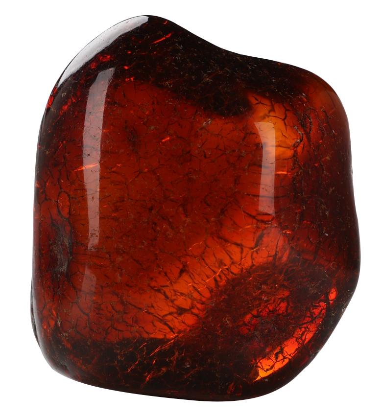

琥珀是距今4500—9900万年前的松柏科植物的树脂滴落，掩埋在地下千万年，在压力和热力的作用下石化形成，故又被称为“松脂化石”。琥珀的硬度低，质地轻，触感温润细致，有宝石般的光泽与晶莹度，属于非结晶质的有机物半宝石，轻巧玲珑。琥珀大部分为透明质，颜色以黄色最为普遍，也有红色、绿色和罕见的蓝色。中国古代称琥珀为“遗玉”，有的琥珀只需稍加抚摩，即可释放出迷人的松香气息，具有安神定性的药用功效，所以琥珀自古就被视为珍贵的宝物。《西京杂记》中记载，汉成帝后赵飞燕就使用琥珀枕头以摄取芳香。
点击查看文物大图
